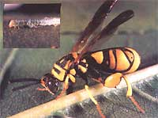

Here's the seventeenth in a series of articles that will help you tell friend from foe in your garden.
In my last column (in MOTHER N0. 97), I mentioned that one natural, effective means of controlling cutworms and other caterpillars in your garden is to introduce a tiny parasitic wasp species-known scientifically as Trichogramma -whose larvae feed upon the eggs of harmful insects. This time around, I'd like to expand on the use of Trichogramma and other chalcids as a natural means of controlling insect pests in your garden.
About 12 mm in length, this leucospidid wasp is a parasite on the raspberry horntail, as well as being one of the largest chalcids and a superb mimic of the yellow jacket. INSET' A cluster of three chalcid larvae prepare to pupate outside the body of their host, an inchworm. Although the caterpillar is still alive, it won't live long enough to pupate and reproduce.
The 2,200 or so North American species of chalcids are members of a large superfamily (Chalcidoidea) which is divided into 22 families. Chalcids are typically wasplike in appearance and have elbowed (jointed and bent) antennae resembling those of ants. They differ dramatically from other wasps in size, averaging only two to three millimeters in length (though some reach 12 mm or more), as well as in the fact that their wings are practically veinless. Many chalcids have dark bodies and yellow legs, but some are brightly colored with a gorgeous metallic sheen.
Despite the chalcids' diminutive size, these garden helpers are death on the eggs and larvae of some of the most destructive varieties of insect pests, including two-winged flies, beetles, moths and butterflies, aphids, leafhoppers, scale insects, and whiteflies.
In addition to their devouring other insects in the embryonic or larval forms, certain chalcid species display a number of unusual, and therefore interesting, habits. For example, some chalcids are well known for polyembryony , in which anywhere from ten to over a thousand larvae develop from each egg . . . good news for the gardener who's plagued with insect pests and wants to introduce a large number of beneficial parasites quickly and with little effort.
On the other hand, another chalcid phenomenon-known as hyperparasitism -can work against the gardener, and occurs when a chalcid uses another parasitic insect for its host, thus negating the beneficial effect of the victim parasite. (In one species of chalcid, this hyperparasitism takes on a bizarre twist in that while the females are parasites of scale insects, the males are hyperparasites that attack the parasites of scale insects . . . including the females of their own species!)
The big success story among the chalcids, of course, is good old Trichogramma , which feeds on such infamous garden pests as codling moth caterpillars, cutworms, armyworms, bollworms, hornworms, cankerworms, and a great many others. (If you decide to purchase a batch of Trichogramma eggs for pest control, go with T. minutum to protect orchards and ornamentals, and T. pretiosum for vegetable and field crops.)
Another particularly beneficial chalcid species is Encarsia formosa , which has proven helpful in controlling stubborn infestations of the greenhouse whitefly ( Trialeurodes vaporariorum ). Because this little wasp lays its eggs under the skins of whitefly larvae, its young will hatch right in the midst of an ample supply of food. (Tests have shown that. this control measure works best in greenhouses with temperatures averaging 75°F or higher. In cooler conditions, the whiteflies may develop faster than the chalcids and thus lessen the parasite's effectiveness.)
To round out this discussion of chalcids, I should mention two species that display atypical habits-one beneficial, the other harmful. The first of these two oddball chalcids is the fig wasp (family Agaonidae), to which nature has given the responsibility of pollinating the commercially important Smyrna fig-a tree that can produce fruit only after being pollinated by the wild fig, or caprifig. And because of the peculiar nature of the Smyrna fig flower, the fig wasp is the only creature that can accomplish this feat. The black sheep of the chalcid family is the clover seed chalcid ( Bruchophagus phatyptera ), which infests the seeds of several varieties of legumes and is one of the very few harmful members of the chalcid clan.
All in all, though, chalcid wasps are among the most valuable insects you can have in your garden, packing one heck of a lot of pestcontrol wallop in a very small, totally natural package.
EDITOR'S NOTE: For more information on fighting pest and disease attacks without resorting to toxic pesticides, you might want to check out a copy of MOTHER 's latest special publication, Green Thumbs and Blue Ribbons. This $3.95 magazine format paperback - which will also help you plan a productive and healthy garden - should be available at your newsstand now!
|
 |
|
|